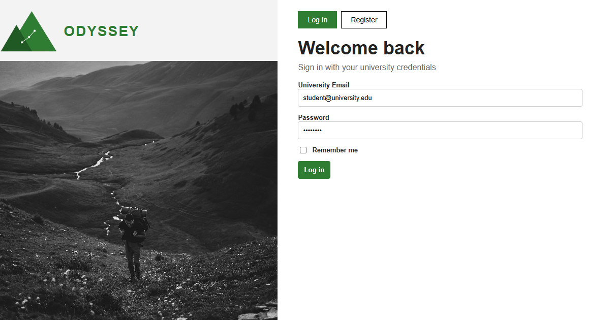
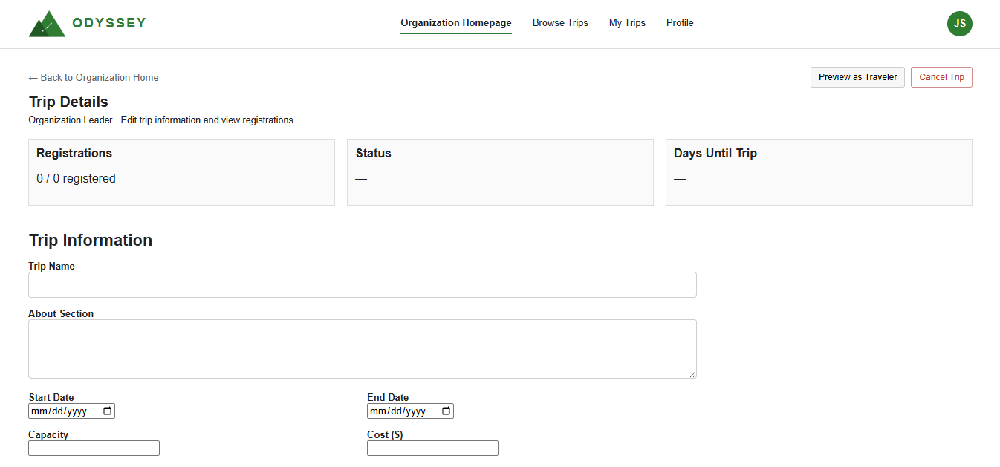
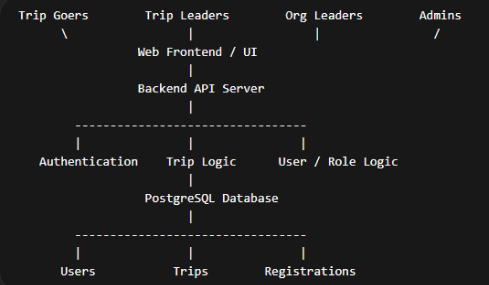
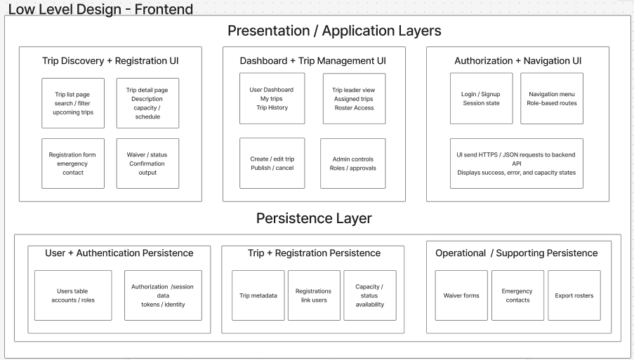
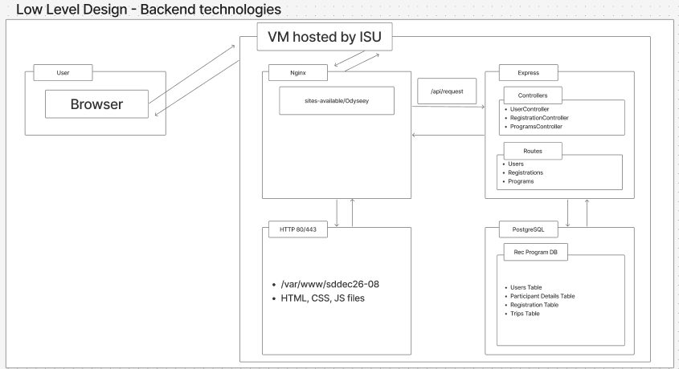

A centralized platform for the ISU Adventure Rec Program — one place to plan, manage, and register for outdoor trips. Trips, organized. Adventures, yours.

The problem
For the ISU Adventure Rec Program, planning and running trips was manual, fragmented across spreadsheets, and time-consuming. Registration lived in one place, approvals were handled by hand, and waiver and payment coordination ran on outdated processes — with no centralized system tying any of it together.
Because recreation trips are logistics-heavy and time-sensitive, those gaps had real consequences: participants couldn't see what they'd signed up for or what was left to do, trip leaders worked from incomplete rosters, and program coordinators lost time reconciling information across tools. This was a student-proposed project, and we worked directly with the Adventure Rec Program as our client.
What I owned
As PM and client relations, I was the line between a six-person engineering team and the Adventure Rec Program. I ran client communication, turned requirements into specs the team could build against, and kept frontend, backend, and database work coordinated with a hybrid waterfall-agile approach and a feature-organized Git issue board.
Beyond project management, I helped shape Odyssey's branding and contributed to the UI and frontend — so the product reflected what the client actually asked for, not just what was easiest to ship.
Designing for the room
The hardest design constraint wasn't a screen — it was that four very different people needed the same system to behave differently. Role-based access shaped the whole product.
Students browsing and registering for trips, checking status, and submitting their information through one clear flow.
Staff leading specific trips, who need participant info, rosters, and trip status from a single source of truth.
Coordinators who create, edit, and cancel trips, assign leaders, and oversee multiple programs.
System-level managers who verify organizations, assign org leaders, and govern roles and platform integrity.
The product

System design
Odyssey is built as a decoupled system: a static HTML/CSS/JS frontend, a Node.js and Express backend split into routes, controllers, and middleware, and a PostgreSQL database. Nginx sits in front as a reverse proxy, all deployed on an Ubuntu VM hosted by ISU. Authentication uses JWT with bcrypt-hashed passwords, and role-based access control governs who can see and do what.



Process
Worked directly with the Adventure Rec Program to understand how trips actually ran, then turned those conversations into functional, UI, UX, and security requirements the whole team could design and build against.
Shaped the product around the four user types — what each role could see and do — so access control was a design principle, not an afterthought bolted on at the end.
Kept frontend, backend, and database work moving in parallel with a hybrid waterfall-plus-agile workflow, a feature-organized Git issue board, and regular team check-ins.
Validated core flows through testing and walkthroughs — confirming the system enforced its hard constraints and that the main paths felt intuitive to real users.
Where it stands